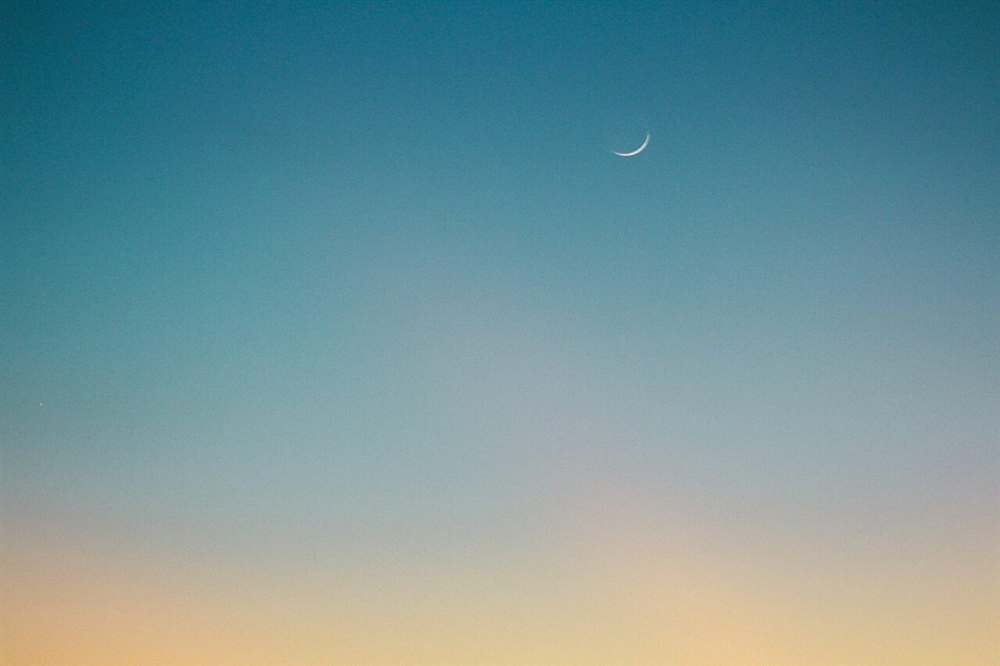
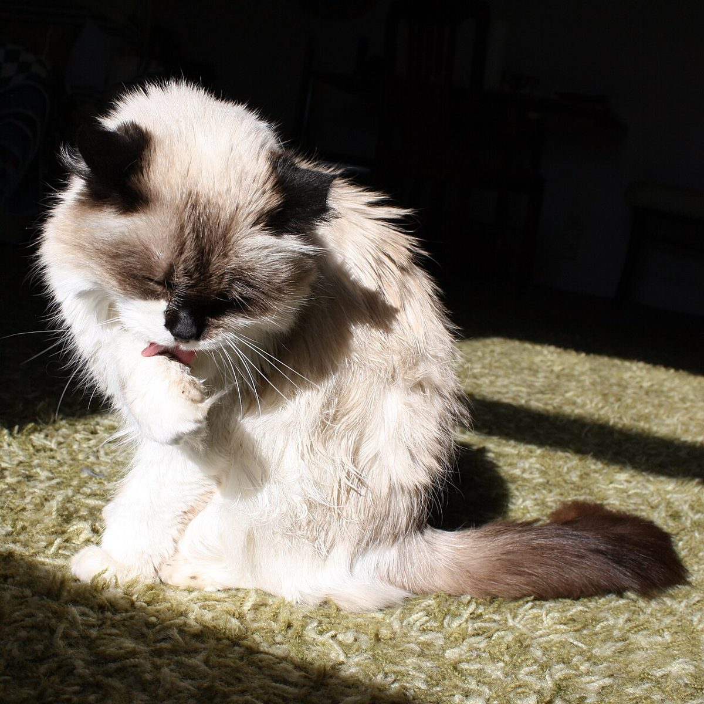
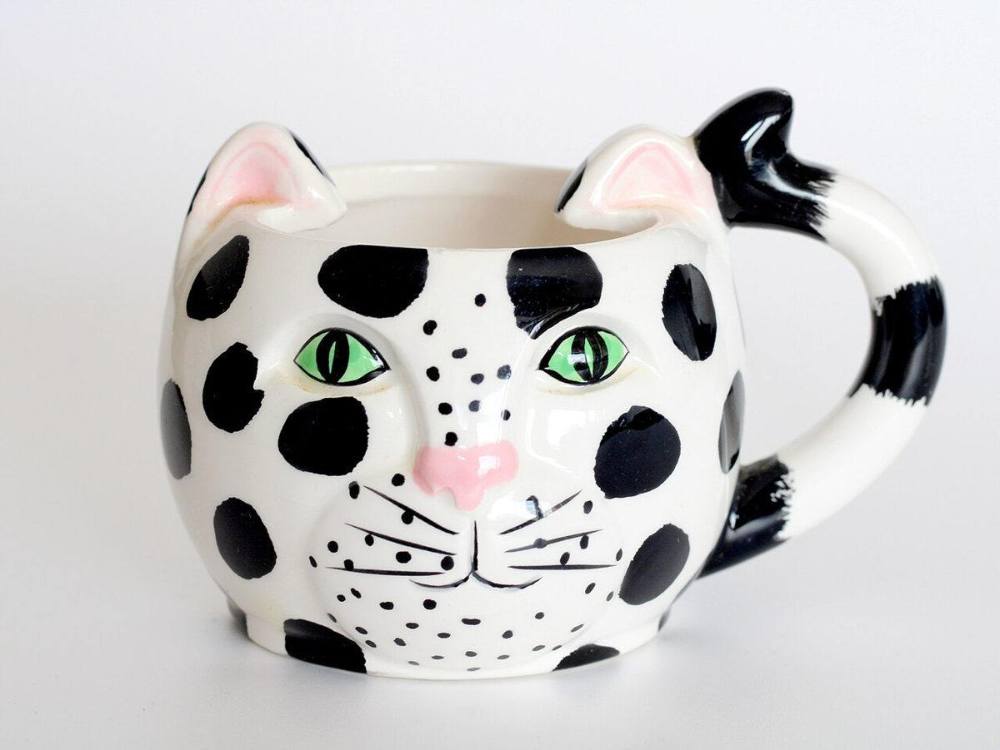
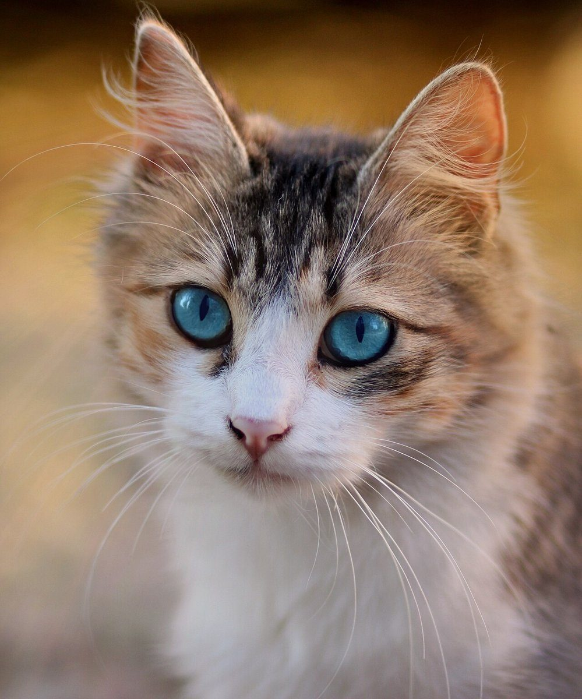
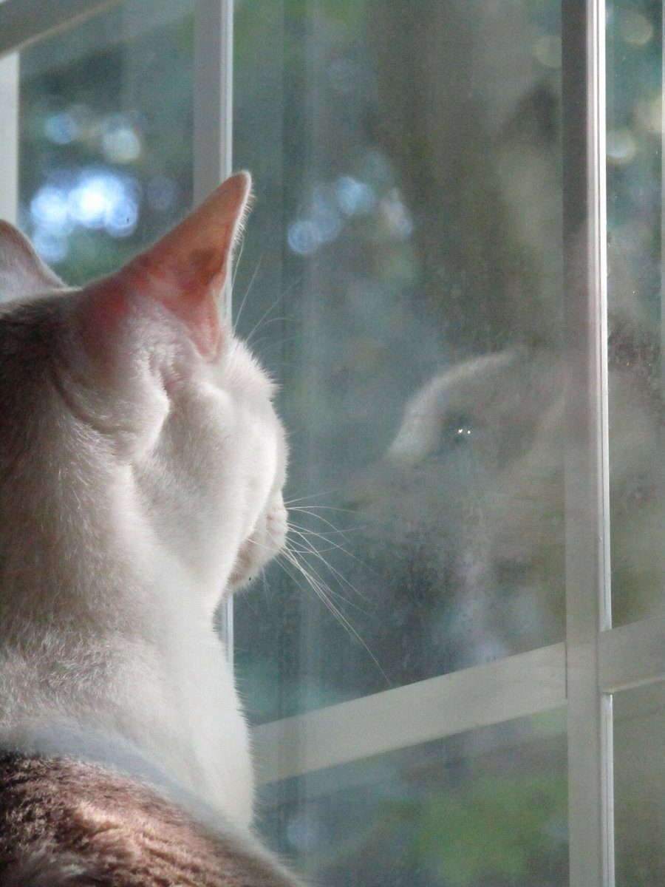
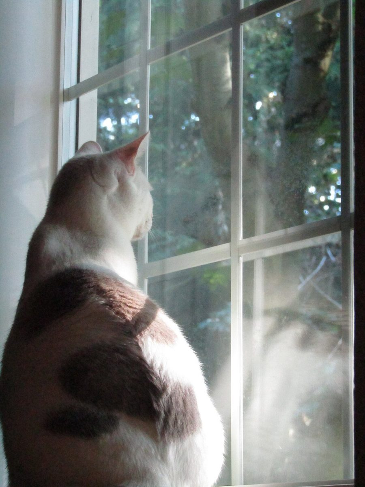
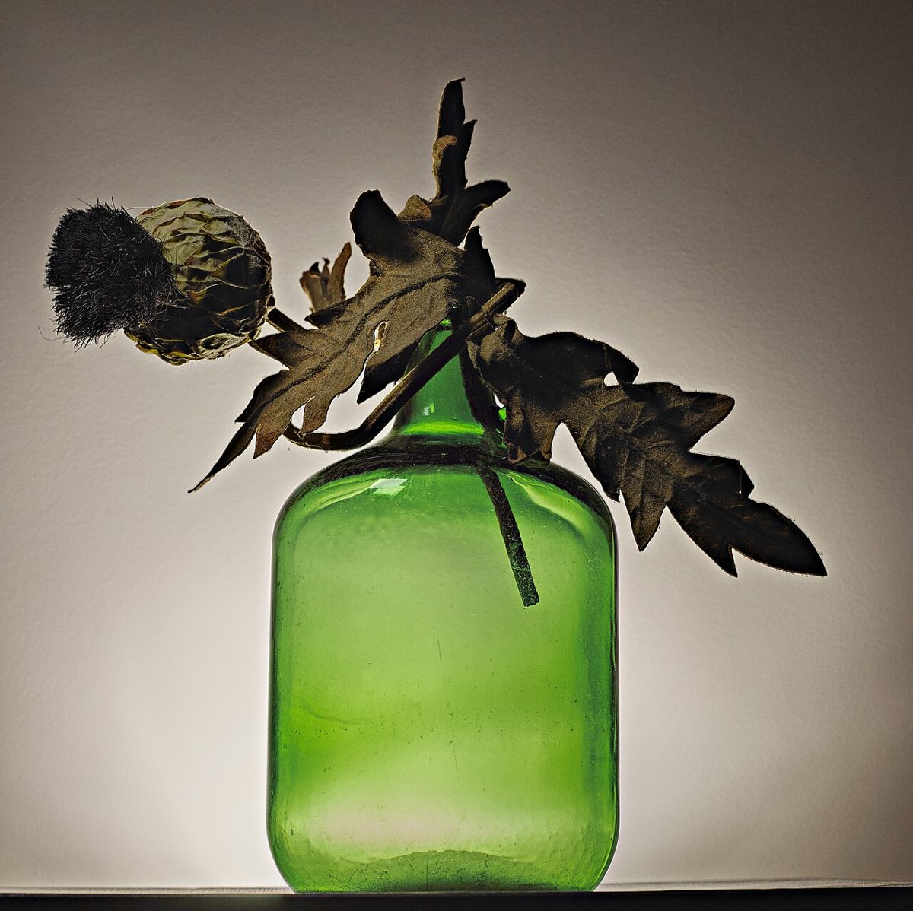
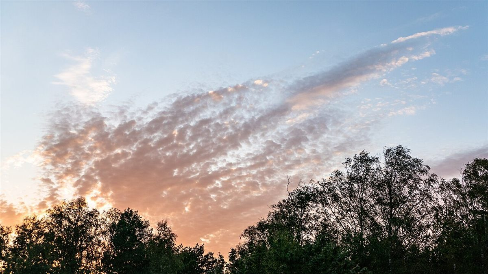
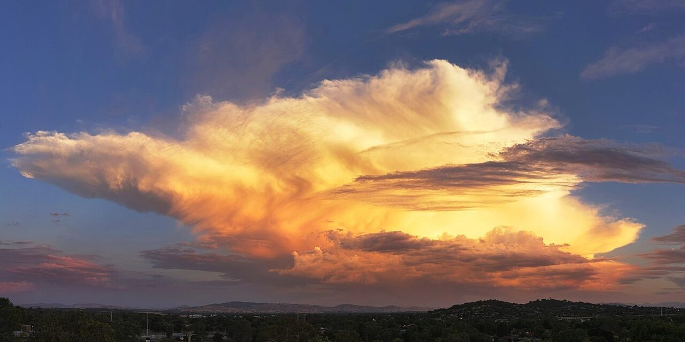

Half moon (Unsplash) / Jeremy Bishop / CC0 1.0 / 撮影地: 撮影地不明
お店のこと
路地裏の、屋根裏のような空間
cafe Nornは、尾道市中心部の裏路地にあるカフェです。2023年11月17日にオープンしたと紹介されています。
- 「猫と空」をイメージしたメニューが特色と紹介されています。
- 店内は絵本やドライフラワーで飾られ、屋根裏のような「秘密基地」の雰囲気と紹介されています。
- 1階はカウンター、2階はテーブル席。木のテーブルはスタッフの手作りと紹介されています。
- 入口では雑貨も販売していると紹介されています。
店名の意味や、猫と空をテーマにした理由は確認できていません。上の内容は、公開されている紹介記事などによるもので、最新の状況は Instagram でご確認ください。

メニュー
猫と、夕焼けの空を、ひとさじずつ
紹介記事で触れられている提供内容です。季節や時期で変わることがあります。価格・詳細は準備中です。

夕焼けのドリンク
夕焼けをイメージしたクリームソーダなどが紹介されています。
価格 準備中
猫のモチーフと、猫の手のスプーン
猫モチーフの品を注文すると、猫の手の形のスプーンが出ると紹介されています。
詳細 準備中モーニング・ブランチ・旬の果物を使ったデザートも紹介されています。写真は雰囲気のイメージで、実際の品ではありません。
ひと息の時間
空を見て、猫を想う







口コミ
こんな声が聞こえてきそう
以下は制作側が作成したイメージ例で、実在のお客様の声ではありません。
イメージ例
路地を抜けて階段をのぼると、屋根裏みたいな小さな席。窓の外の空をぼんやり見ているだけで、時間がゆっくりになりました。
イメージ例
猫の顔のデザートは、食べるのがもったいないくらいかわいい。猫の手のスプーンも楽しくて、思わず写真を撮りました。
イメージ例
朝の散歩のあとに寄れるのがうれしい。絵本やドライフラワーを眺めながらのコーヒーは、ほっとする一杯でした。
アクセス
尾道の路地の奥へ
| 所在地 | 〒722-0035 広島県尾道市土堂１丁目１４−４ |
|---|---|
| 電話 | 準備中(ご連絡はInstagramから) |
| 営業時間 | 準備中 |
| 定休日 | 準備中 |
| @cafe.norn_onomichi |